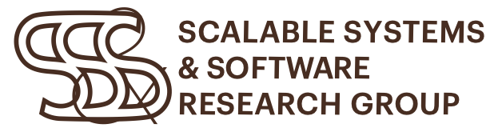
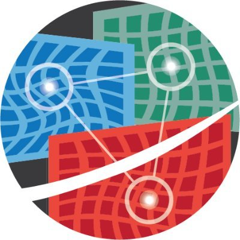
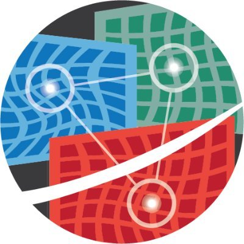

Roberto Palmieri |
   
|
|
I am an Assistant Professor in the Computer Science and Engineering Department at Lehigh University where I co-lead the SSS - Scalable Systems Software Research Group.
|
|
|
I am looking for motivated students who are enthusiastic about theory and practice of concurrency, synchronization, distributed systems, and/or any topic that falls into my areas of interest (see Research).
If you are interested in working with me, please contact me immediately. |
|
Some Recent Publications:
|
|
-
-
-
-
-
Roberto Palmieri, PhD -- he/him/his
Assistant Professor
Computer Science and Engineering
Lehigh University
Building C 338
phone: +1 (610) 758-3623
email: "palmieri" at "lehigh" dot "edu"
-
-
-
Recent News:
- - Invited to serve as Program Committee member of Eurosys 2021. Consider to submit and attend!
- - Our paper "Performance Evaluation of the Impact of NUMA on One-sided RDMA Interactions" has been accepted at SRDS 2020. Congrats Jacob!
- - Our paper "On Reading Fresher Snapshots in Parallel Snapshot Isolation" has been accepted as poster paper at ICDCS 2020. Congrats Masoomeh!
- - Invited to serve as Program Committee member of ACM PODC 2020. Consider to submit and attend!
- - Invited to serve as Program Committee member of USENIX ATC 2020. Consider to submit and attend!
-